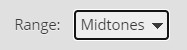
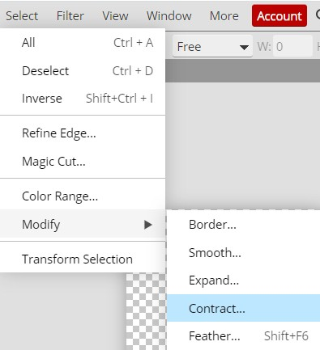
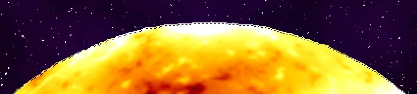

|
PART II:
The Space Scene |
|
Step 12: Sun |
|
We could just create a large glowing white spot and call it our sun, but
that would be a pretty boring sun. Take a look the following view of the
sun...
Yes, that is the actual sun. It was filmed using a special
filter that removes the glare and allows you to see the surface of the sun.
Notice that it is a very interesting and dynamic object. In this step, we are
going to try and create a sun that is similar to this one (ok, our sun will
not rotate, but it will look way more awesome).
Keep the following important fact in mind...
YOUR SUN SHOULD REMAIN
SELECTED FROM DIRECTION 8 THRU DIRECTION 37. IF YOU HAPPEN TO DESELECT YOUR
SUN, YOU CAN RESELECT IT BY PRESSING AND HOLDING THE Ctrl KEY AND CLICKING
ON THE SUN LAYER'S THUMBNAIL.
(A layer's thumbnail is the little picture between the eyeball
and the layer name)
(Ctrl+thumbnail click will select all of the non-transparent pixels on
the layer)
In other words, if you begin work on your sun but have to stop
before you are finished and come back to it at a later time, then you will need
to reselect the sun before you can continue with the tutorial.
- Open your Space11
file in Photopea
- Turn the visibility of the Star Field and Nebula folder groups off
(they should both be locked)
- Insert a new layer and name it Sun - make sure the Sun layer
is selected and is at the top of the layer stack...
- Press D on the keyboard to make sure Set foreground color is black and
Set background color is white
- Set the Zoom to 100% (the keyboard shortcut for this is
Ctrl+1)
- Select the Ellipse Select tool...
If you do not see the Ellipse Select tool, it is likely because you have
the Rectangle Select tool selected - right-click the Rectangle Select tool and then select the Ellipse
Select tool...
- Make sure the feather is set to 0px...

- Press and hold the Shift key then Click and drag to create a circle in the center of your canvas
(holding the Shift key as you drag makes sure the circle is
perfectly round, if your sun is an oval you will lose points!) - the circle should be fairly large, remember that
images
lose very little quality when shrunk but can lose a large amount of
quality when increased in size
- Use the Paint Bucket tool to fill the CIRCULAR selection with
black...
- Click Filter then point at Render and click Difference
Clouds...
The Difference Clouds filters work similar to the Cloud filter in that a
random pattern of color between the values of the foreground and background
colors are generated, but Difference Clouds an extra step is added that inverts
portions of the selection area so that darker and more bold patterns are
created. By repeatedly applying the Difference Clouds filter we can generate
stronger and stronger 'lines' within the cloud, similar to the lines seen in a
piece of marble.
- Press Ctrl+Alt+F (this just reapplies the last filter you applied)
multiple times until you get a pattern that you
like - try to get a pattern with some dark streaks and lots of bright areas
- you should now have something similar to the image below...

Let me repeat - you want more light areas than dark areas
- We need to make things a little brighter, so click Image then
point at Adjustments and click Levels...
- Drag the sliders so they are in approximately the same position as those
in the image below...
Don't try to make your sliders match mine exactly (your sun is different from
mine), instead move them to a
position that gives your sun a nice, unique pattern and a glow that you like
- Click OK
- Click Filter then point at Sharpen and click Unsharp
Mask...
Despite its name, the Unsharp Mask Filter actually makes the image
sharper.....go figure.....
- Set the values to match those in the image below...
You will have to type the Amount is as
the slider only goes up to 200%
Notice that you now have a more detailed and interesting surface.
- Click OK
- The sun looks flat, so let's give it a more spherical look - click Filter then point at
Distort and click Spherize (this filter causes the selection to seem as though it is round)...
- Set the Amount to 100%...
- Click OK
- Take a look at your sun and determine if you are happy with how
spherical it looks; if not, repeat the Spherize, but turn down the Amount
(most of you will want this second Spherize to have an Amount of 50%) -
when you are happy with how spherical it looks, move on...
To give you an idea of the changes we just made, in the image below, the sun
on the left is what I had after direction 14 while the one on the right is
after applying the Unsharp Mask and Spherize filters...
Notice how the sun on the right looks waaaaay cooler and rounder. And here
is the really interesting part - despite the two suns being the exact same
size in the image above, the sun on the right appears to be slightly smaller
because it seems to be bulging out towards you. I know, awesome. Ok, let's
add some color.
- Click Image and point at
Adjustments and click Color Balance...
We will need to change
each of the three Range settings shown below...
You need to change each value separately
Keep in mind that since
everyone's sun pattern is different, you do not have to use the exact
numbers indicated in the next 6 directions. Instead, use them as the starting
point and make minor adjustments to the various values until you get a nice,
bright sun with a pattern you are happy with.
- Make sure the Range selection is set to Shadows...
- Change the Red, Green, and Blue color settings to match the image
below...
- Change the Range selection to Midtones...

- Change the Red, Green, and Blue color settings to match the image
below...
- Change the Range selection to Highlights...
- Change the Red, Green, and Blue color settings to match the
image below...
You should now have a sun similar to the one below...

Remember that what we are making is the image of a sun if you were looking
at it without the incredible glow around it, otherwise we could just make a
really large star using the Burn Tool, but that would be a sun with no
character, and where is the fun in that?
- Click OK on the Color Balance window
Because the original circle that we drew was an ordinary circle with a
hard edge, most of us now have a sharp edge that will make our sun stand out
in our scene instead of blend in with the surrounding space, so
let's soften up the edge just a little bit. There are several ways to pull
this off using Photopea, so let's use a method that will give us a quick
introduction to Masks.
- Make sure your sun is selected (if it is not, reread the
important directions at the top of this page)
We want to start by decreasing the selection by several pixels so that we can
feather the edge.
- Click Select then click Modify and click Contract...

This will open the Contract window...
- Set the Contract amount to 1 px as in the above image
- Click OK - notice that the selection line around our sun is now
slightly smaller...

Now let's apply a feather to our selection.
- Click Select then point at Modify and click Feather...
This will open the Feather window...
- Set the Feather amount to 3 px as in the image above
- Click OK - notice that nothing appears to have happened
Ummmm.....nothing happened.....what's going on? It turns out that the
feather we just applied was only applied to the SELECTION and not to the sun
image itself. If we were to fill the selection with a color at this point, it
would have a nice, 3 pixel wide feather around it. What we need now is a way to
apply the feathering that is on our selection onto the actual image of the sun
itself. This is where a Mask will come in handy.
- At the bottom of the Layers panel, click the Add Raster Mask
icon...
Notice when you click the icon that the sun immediately gets a softer edge
So what is going on? Masks sit on layers and control the transparency (how
visible) the items on the layer are. With our mask, we are telling Photopea
to allow color from lower layers to appear through the feathered edge of our
selection. Take a look at your Layers panel...
That black square with the white circle in it is there to indicate that the
layer has a mask applied to it. Black areas of a layer mask are see through
while white areas are solid. In other words, we can see what is on the layers
below our sun in the black area, and we can see what is on the sun layer in the
white area. Turn the visibility of your Star Field folder group on to get the full
effect...
- Turn the visibility of your Nebula folder group on - you should
have something like the image below...
Our sun is looking pretty good at this point, but we still need to give it
a corona (the glowing part just above the surface of the sun)
- Double-click the Sun layer where
indicated below...
This opens the Layer Style window...
- Click the Outer Glow option (red arrow above)
Be careful when working with the Layer Style window. You will only see the
settings for each option if that option is highlighted in gray, as Outer Glow
is above. Note that it is possible to turn options on and off by clicking the
checkbox without actually selecting the option, so be sure that you have each
option selected - it should be gray - before you try to adjust its settings.
- We only need to make a few changes here: change the color to a
light orange, and increase the Size option to 75...
- Click OK
- You should now have something similar to the image below...

- Use the Move Tool to place your sun in a corner of your space scene - it
doesn't matter which corner you put it in, but be sure that what is showing
has more bright areas than dark (keep in mind that if you want it in a
specific corner but don't like the part of the sun showing on that corner
that you can always rotate the sun [click Edit - Transform -
Rotate] until an area that you like is visible)
- Click Edit then point at Transform and click Scale
and resize your sun (remember to hold down the Shift key as you resize your
sun so that you are changing the height and width at the same time) to make
it the
size you would like it to be - remember, this is your sun so it needs to be
large, but how large is up to you (don't make it too large or too small as
it will look unnatural)
- Click the New Folder icon at the bottom of the Layers panel, this
will insert a new folder at the top of your layer stack...
Don't worry if your folder is named something different than mine - we will
change the folder name a few directions from now
Notice that the Sun layer is not in the new folder even though it was the
active layer when we inserted the new folder. Photopea only places layers into a
new folder when the folder is created if multiple layers are selected. We can
tell that the Sun layer is outside the new folder because the layer thumbnail of
the Sun layer and the black arrow of the folder are aligned with each other. If
the Sun layer was inside the folder, it would be indented. Keep working and you
will see what I mean a few directions from now.
Let's place the Sun layer in the new folder.
- Click the Sun layer and drag it up until you see a black box
around the new folder...
This indicates that if we release the Sun layer that it will be placed in
the folder
- Release the the mouse button - the Sun layer is now in the folder...
We can tell that the Sun layer is inside the folder because the Sun layer's
thumbnail is indented slightly to the right. Notice how it no longer sits
directly under the black arrow of the folder.
- Rename the folder containing the Sun layer to Sun...
- Collapse the Sun folder by clicking the black arrow...
Your Layers panel should now look like this...
- Lock the Sun folder group
You should now have something similar to the image below - notice that I
flipped my sun around so that what is mostly visible is the brightest
portion...
We are now ready to add some planets to our space scene. We will make two
different planets using similar procedures, with one requiring you to use an
existing image and the other allowing you to build the planet entirely from
scratch. I know...awesome.
- Click File then click Save as PSD
- Name the file Space12
01 |
02 |
03 |
04 |
05 |
06 |
07 |
08 |
09 |
10 |
11 | 12 |
13 |
14 |
15 |
16 |
17 |
18 |
19 |
20